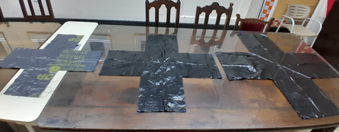
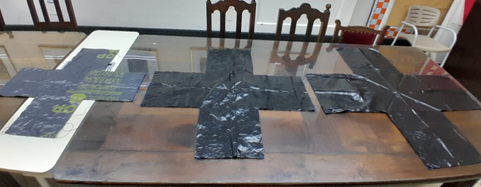
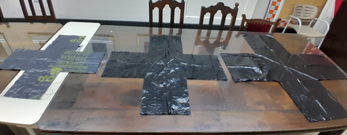

Nuestro sistema de recuperación está dividido en 2 partes: por un lado, el paracaídas que es obligatorio en todos los equipos, y por otro lado, adicionalmente decidimos agregarle un buzzer que funciona en base a un altímetro.
Para armar el paracaidas, nos basamos en los calculos que nos ofreció la profesora María Noel Gigena (profe de matemática y física de nuestro colegio). En base a ellos,
decidimos realizar un paracaídas de 25 cm de lado en forma de cruz. El material utilizado fueron bolsas de consorcio e hilos encerados por su costo y durabilidad.
Primero probamos con la medida ya mencionada sin peso, donde pudo caer bien. Al agregarle peso quisimos probar con modelos más grandes para tener caídas muy lentas. Entonces intentamos con diseños de 30 y 35 cm. No obstante, el tutor nos aconsejó volver al modelo de 25 cm porque con este lográbamos una caída de 5 m/s y la estructura no se rompió en ninguna de las caídas por lo que podíamos confiar en que sería una caída segura.

Con el tiempo, nos dimos cuenta de que las esquinas del paracaidas podían romperse en el vuelo por el peso del satélite, así que decidimos reforzarlas
Además, también decidimos quemar las puntas de los hilos y reforzar los nudos para evitar inconvenientes a futuro

Por otro lado, decidimos implementar un mosquetón para atar los hilos del paracaidas al satélite. Este nos permitió mayor facilidad al momento de separar el paracaidas del satélite y también nos sirvió para que los hilos se enredaran menos:
Para atar los hilos encerados al mosquetón utilizamos el Nudo de Briol:


Como sistema de recuperación, intentamos incorporar un sensor de aceleración y giro MPU6050 y una alarma buzzer.
En este sistema, cuando el sensor dejara de detectar aceleración se activaría el buzzer, permitiendo que se escuche al satélite a una distancia cercana.
Debido a dificultades en la programación, calibración y de tiempo, este sistema falló para el final de la entrega, aunque se mantuvo incorporado en el satélite.
Antes de comenzar con este sistema, Agustina e Ivo fueron a un taller de robótica organizado por la UNC y aprendieron a programar un sensor de ultrasonido y un buzzer en conjunto para arduino lo que nos permitió introducirnos en la programación del sistema de recuperación aunque al final no funcionó.